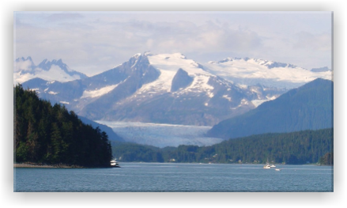

Glacier Bay National Park is located in Alaska. President Jimmy Carter declared the park a national park. It has been a UNESCO World Heritage Site since 1992.
There are no roads leading to Glacier Bay National Park! It is only accessible by air or water travel. Most visitors arrive on a cruise ship. There is a regulation on the number of ships allowed to visit per day.
There are 9 tidewater glaciers in the park. The glaciers descend from snow-capped mountains into the bay creating spectacular displays of ice and icebergs. The movement of glaciers have been documented since 1786. The glaciers have been advancing and receding due to earthquakes and tsunamis.
There are no roads leading to Glacier Bay National Park! It is only accessible by air or water travel. Most visitors arrive on a cruise ship. There is a regulation on the number of ships allowed to visit per day.
There are 9 tidewater glaciers in the park. The glaciers descend from snow-capped mountains into the bay creating spectacular displays of ice and icebergs. The movement of glaciers have been documented since 1786. The glaciers have been advancing and receding due to earthquakes and tsunamis.
